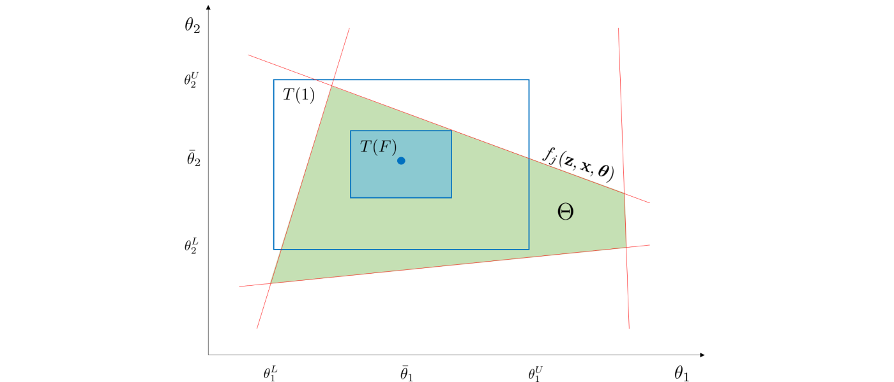

Background
This page provides a background on the theory and methods that form the computational framework that is implemented by FlexibilityAnalysis to quantify and analyze system flexibility. This is not a rigorous or complete review and more information is provided here
System Characterization
We consider general systems that are subjected to random variation and attempt to counteract it via recourse (if there is recourse). We characterize these systems as having random variables $\boldsymbol{\theta} \in \mathbb{R}^{n_{\theta}}$, recourse variables $\mathbf{z} \in \mathbb{R}^{n_{z}}$, state variables $\mathbf{x} \in \mathbb{R}^{n_{x}}$, equality constraints $h_i(\mathbf{z}, \mathbf{x}, \boldsymbol{\theta}) = 0, \, i \in I,$ and inequality constraints $f_j(\mathbf{z}, \mathbf{x}, \boldsymbol{\theta}) \leq 0, \, j \in J$. The feasibility (meaning there exists recourse to satisfy the system constraints) of a particular instance of $\boldsymbol{\theta}$ is evaluated via the feasibility function $\psi(\boldsymbol{\theta})$ which is
where $\boldsymbol{\theta}$ is feasible if $\psi(\boldsymbol{\theta}) \leq 0$. This feasible function is what the ismeanfeasible and findstochasticflexibility functions use to evaluate feasibility of particular instances of $\boldsymbol{\theta}$. The set of all feasible instances of $\boldsymbol{\theta}$ forms the feasible region $\Theta := \{\boldsymbol{\theta}\,:\,\psi(\boldsymbol{\theta}) \leq 0\}$ which is illustrated below.

Stochastic Flexibility Index Problem
The stochastic flexibility index $SF$ is a flexibility metric for systems that are subjected to uncertain parameters (e.g., disturbances, physical parameters) that are modeled as random variables, and is defined as the probability of finding recourse to maintain feasible operation. This can be computed by integrating the probability density function $p:\mathbb{R}^{n_{\theta}}\to \mathbb{R}$ of the random parameters over the feasible region:
This is illustrated below for a multivariate Gaussian distribution.

The $SF$ index can be computed rigorously via Monte Carlo (MC) sampling. This is done by assessing the feasibility of each realization. Such an approach converges exponentially with the number of MC samples but typically requires a very large number of samples leading to scalability issues. One possible alternative is to estimate the stochastic vulnerability index $SV := 1 - SF$ which can be determined by incorporating all of the MC samples in one large linear program:
where $K$ is the number of samples. The sampled value of $SV$ is then obtained by:
The function findstochasticflexibility employs both of these techniques estimate the $SF$ index via MC sampling.
Flexibility Index Problem
The so-called flexibility index problem provides a more scalable approach to quantifying flexibility. This approach seeks to identify the largest uncertainty set $T(\delta)$ (where $\delta \in \mathbb{R}_+$ is a parameter that scales $T$) for which the system remains feasible. In other words, we seek to find the largest uncertainty set under which there exists recourse to recover feasibility. The flexibility index $F$ is defined as:
This approach is illustrated with a traditional hyperbox set below.

This approach is deterministic in nature; consequently, it does not have a direct probabilistic interpretation (as the $SF$ index does). By transforming the inner problem in terms of its first order KKT conditions we obtain the following mixed integer formulation which is valid for any compact $T(\delta)$:
This formulation can be rather tedious to implement and thus it what originally motivated the development of FlexibilityAnalysis. This MIP is what the solvehook associated with the flexibility model m uses to compute the $F$ index when the function solve is used.
Uncertainty Set Characterization
Any compact set can be used to compute the flexibility index. The table below shows the 5 types FlexibilityAnalysis currently employs. Here $\bar{\boldsymbol{\theta}}$ is the nominal point (mean), $V_{\boldsymbol{\theta}}$ is the covariance matrix, and $\Delta\boldsymbol{\theta}^-, \Delta\boldsymbol{\theta}^+$ are maximum lower and upper deviations, respectively. In FlexibilityAnalysis these sets are specified via setuncertaintyset.
| Name | Uncertainty Set |
|---|---|
| Ellipsoidal Norm | $T_{ellip}(\delta) = \{\boldsymbol{\theta} : \lVert\boldsymbol{\theta} - \bar{\boldsymbol{\theta}}\rVert_{V_{\boldsymbol{\theta}}^{-1}}^2 \leq \delta \}$ |
| Hyperbox Set | $T_{box}(\delta) = \{\boldsymbol{\theta} : \bar{\boldsymbol{\theta}} - \delta\Delta\boldsymbol{\theta}^- \leq \boldsymbol{\theta} \leq \bar{\boldsymbol{\theta}} + \delta\Delta\boldsymbol{\theta}^+\}$ |
| $\ell_\infty$ Norm | $T_{\infty}(\delta) = \{\boldsymbol{\theta} : \lVert\boldsymbol{\theta} - \bar{\boldsymbol{\theta}}\rVert_\infty \leq \delta \}$ |
| $\ell_1$ Norm | $T_{1}(\delta) = \{\boldsymbol{\theta} : \lVert\boldsymbol{\theta} - \bar{\boldsymbol{\theta}}\rVert_1 \leq \delta \}$ |
| $\ell_2$ Norm | $T_{2}(\delta) = \{\boldsymbol{\theta} : \lVert\boldsymbol{\theta} - \bar{\boldsymbol{\theta}}\rVert_2 \leq \delta \}$ |
We observe that $T(\delta)$ can be represented by any combination of the uncertainty sets in the table above or other sets (provided that the resulting combined set is compact). This provides the ability to incorporate physical knowledge on the uncertain parameters and/or to create a wider range of uncertainty set shapes. For instance, the positive (truncated) ellipsoidal set $T_{ellip+}(\delta) := T_{ellip}(\delta) \cap \mathbb{R}_+^{n_{\theta}}$, where $\mathbb{R}_+^{n_{\theta}} := \{\boldsymbol{\theta} : \boldsymbol{\theta} \geq 0\}$ can be used to represent parameters that are known to be non-negative (e.g., demands, prices). The in FlexibilityAnalysis the only_positive option enables the intersection of the sets mentioned above with the positive set $\mathbb{R}_+^{n_{\theta}}$.
One advantage of using $T_{ellip}(\delta)$ is that the associated flexibility index (denoted by $F_{ellip}$) can be used to obtain the confidence level:
where $\gamma(\cdot)$ and $\Gamma(\cdot)$ are the incomplete and complete gamma functions. Interestingly, this confidence level provides a lower bound for the stochastic flexibility index $SF$ (i.e., $\alpha^*\leq SF$). This thus provides an avenue to obtain a probabilistic interpretation of the deterministic flexibility index while avoiding MC sampling. This confidence level can be obtained with the getconfidencelevel function.
For flexibility analysis it is critical that $\bar{\boldsymbol{\theta}}$ be feasible, thus the function [ismeanfeasible] is used to verify the mean's feasibility. In some applications, specifying $\bar{\boldsymbol{\theta}}$ might be difficult if not enough data is available or if a system is not routinely operated at any given point (e.g., a power grid). Thus, we introduce methods that can be employed to find well-centered nominal points.
The analytic center $\bar{\boldsymbol{\theta}}_{ac}$ can be defined by:
Here, $s_j\in \mathbb{R}$ are slack variables. This problems pushes the constraints to the interior of the feasible region and gives the analytic center as the point that maximizes the geometric mean of the constraints (slack variables). The feasible center $\bar{\boldsymbol{\theta}}_{fc}$ is the point that maximizes the worst-case slack variable and is given by:
In FlexibilityAnalysis these centers can be computed using the findcenteredmean function.
Analysis Techniques
The flexibility index is a valuable metric that can be used to compare system designs. The utility and interpretation of the index for a system will depend on the choice of $T(\delta)$. For instance, the index can be used to determine the confidence level $\alpha^*$ if the set $T_{ellip}(\delta)$ is used when $\boldsymbol{\theta} ~ \sim \mathcal{N}(\bar{\boldsymbol{\theta}}, V_{\boldsymbol{\theta}})$. The index might not have a clear interpretation or utility for some choices of $T(\delta)$ but can still be useful to quantify improvements in flexibility from design modifications (retrofits). An example of comparing two systems with ellipsoidal and hyperbox sets is shown below.

It is apparent that Design B has a larger feasible region $\Theta$ and thus has a larger $SF$ index. Both sets reflect this behavior and could be used to make a comparison without having to compute the $SF$ index. A key observation is that the choice of $T(\delta)$ significantly affects how it measures system flexibility. For instance, for Design B, the ellipsoidal and hyperbox sets identify different limiting constraints, and thus exhibit distinct behavior. In particular, index $F_{box}$ is limited by constraint $f_2$ and would not change if constraints $f_1$, $f_3$, and/or $f_4$ were varied to increase the area of $\Theta$, even though the overall system flexibility would be improved. On the other hand, index $F_{ellip}$ is limited by constraint $f_1$. This conservative behavior parallels what is observed with the use of uncertainty sets in robust optimization, where such sets are used to optimize against the worst case scenario such that the solution is robust in the face of uncertainty, and the conservativeness of a solution depends on the chosen shape of the uncertainty set.
The flexibility index problem can also be used to rank constraints that most limit system flexibility, since it implicitly identifies constraints that limit flexibility. Specifically, at the solution of the flexibility index problem, the binary variables $y_j$ indicate which constraints are active and therefore limit flexibility. Thus, the flexibility index problem can be resolved by excluding this first set of limiting constraints, so that the next set of limiting constraints can be identified. This step can be repeated to rank system constraints to a desired extent (as long as the solution of the problem is bounded). This is done by noticing that each set of limiting constraints will have an associated flexibility index, which indicates how limiting a particular set of constraints is relative to the other sets. This methodology can also be used to identify and rank system components that limit flexibility in order to guide design improvements or quantify value of specific components. Limiting constraint information can also be used to quantify the impact of failure of system components (e.g., a production facility). This process is illustrated in the figure below.

This shows how limiting (active) constraints are iteratively turned off to find subsequent limiting constraints. In FlexibilityAnalysis the function rankinequalities automatically carries out this iterative methodology. Also, for a particular solved flexibility model m, the active constraint indexes can be retrieved via the getactiveconstraints function.